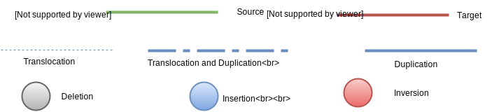

Genome Track:
Render
Bin Size:
250K bp
100K bp
Type:
Chr from:
Start:
End:
Chr to:
Start:
End:
Bacterial blight resistance
Blast resistance
Cold tolerance
Culm leaf
Drought tolerance
Dwarf
Eating quality
Flowering
Germination dormancy
Insect resistance
Lethality
Lodging resistance
Morphological trait
Other soil stress tolerance
Other stress resistance
Others
Panicle flower
Physiological trait
Resistance or Tolerance
Root
Salinity tolerance
Seed
Shoot Seedling
Source activity
Sterility
Add Trait(s)